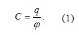
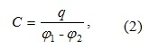
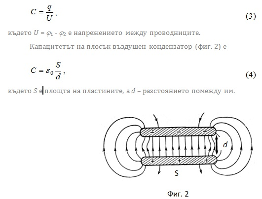
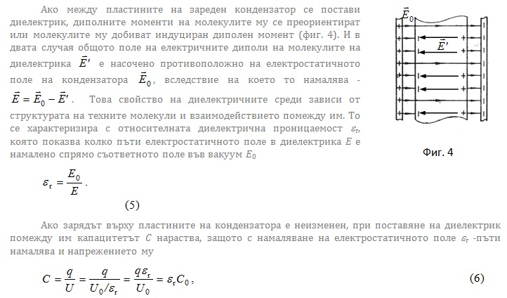
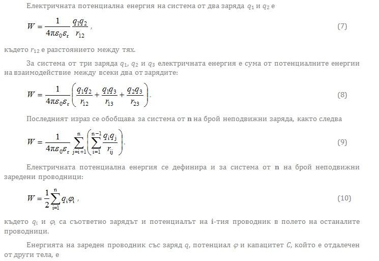
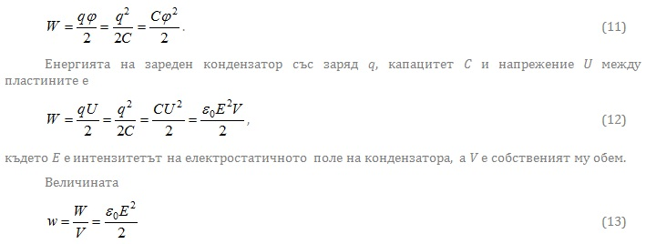

1. Електричен капацитет. Кондензaтори
-
Ако на проводник, намиращ се в хомогенна и изотропна диелектрична среда, се предаде електричен заряд, той се разполага само по повърхността му. Разпределението на заряда зависи единствено от формата на проводника. Отношението на големината на заряда q и потенциала на проводника φ се нарича капацитет

Капацитетът зависи от формата и размерите на проводника и от диелектричните свойства на средата, в която се намира. Той числено е равен на заряда, който трябва да се предаде на проводника за увеличение на потенциала му с единица. Единицата за електричен капацитет е фарадът (F). Един фарад е капацитетът на проводник, който променя потенциала си с един волт, при зареждане със заряд един кулон – 1F = 1С/V.
Взаимният капацитет на два проводника зависи от формата, размерите и взаимното им разположение, както и от диелектричните свойства на средата, в която се намират. Ако единият проводник има заряд +q, а другия има заряд –q, взаимният им капацитет С се определя с отношението
-
φ 1 и φ 2 са съответно потенциалите на двата проводника (фиг. 1). Взаимният капацитет е числено равен на заряда, който трябва да се пренесе от единия проводник върху другия, за да се промени потенциалната разлика между тях с един волт. Кондензаторът е система от два проводника, заредени разноименно с еднакъв по абсолютна стойност заряд, които са така разположени, че електростатичното им поле е съсредоточено помежду им. Силовите линии на полето започват от единия проводник и завършват върху другия. Капацитетът на кондензатор е равен на взаимния капацитет на проводниците, от които е съставен, и се определя с израза
-


където С0 е капацитетът на кондензатора във вакуум, а U0 и U са съответно напреженията на кондензатора преди и след поставяне на диелектрика между пластините.
Фактът, че капацитетът на кондензаторите зависи от геометричното разположение на двата проводника, определя ценното им свойство да преобразуват определени физически величини в електрични сигнали за измервателни и контролни цели. Например механичното преместване на даден обект може да бъде оценено, като се свърже едната пластина на кондензатор към движещия се обект. Тогава капацитетът на кондензатора се променя и това характеризира движението на обекта. Този принцип се използва при капацитивните микрофони, при които метална пластина, представляваща една от пластините на кондензатор, вибрира под въздействие на звукова вълна, променяйки по този начин капацитета. Някои компютърни клавиатури и датчиците за измерване на промени в налягането работят по подобен начин. -
2. Енергия на електростатичното поле


се нарича плътност на енергията на електростатичното поле. Тя се измерва в J/m3. Формулата е валидна не само за полето на кондензатор, но и за всяка точка от пространството, в която съществува електростатично поле с интензитет Е.
Наример, плътността на енергията на електростатичното поле по време на гръмотевична буря достига до 5.10-2 J/m3, което съответства на интензитет на електростатичното поле приблизително 1,1.105 V/m. При ясно време интензитетът на електростатичното поле на Земята е около 95 V/m. В този случай плътността на енергията на електростатичното поле е w = (1/2)ε 0E2 ≈ 4.10-8 J/m3. Това означава, че по време на буря плътността на енергията на електростатичното поле нараства над един милион пъти. -
© ROGACHEV